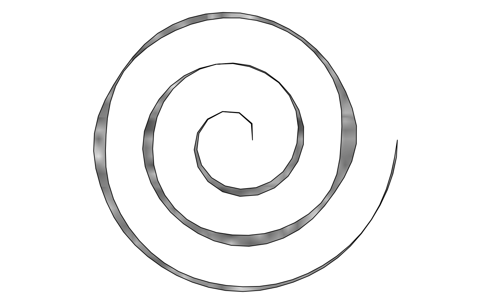

shape_strokepath() builds a tapered, noise-modulated ribbon (like
shape_stroke()) whose backbone follows an arbitrary curve_*()
drawable's own computed points, rather than raw x/y control
points.
shape_strokepaths() is a vectorized version of
shape_strokepath(): each argument may be a vector, recycled against
the others via purrr::pmap()'s own vctrs-based rules. The
result is a sketch containing one shape_strokepath() per recycled
row, rather than a single drawable.
Usage
shape_strokepath(
path,
width = 0.2,
n = 100L,
distortion = noise_field(),
trans = trans_identity(),
...
)
shape_strokepaths(
path,
width = 0.2,
n = 100L,
distortion = noise_field(),
trans = trans_identity(),
...
)Arguments
- path
A drawable with
geometry == "path"(i.e. anycurve_*()constructor's output, e.g.curve_bezier(),curve_line(),curve_twist(),curve_spiral(),curve_arc(),curve_scribble(),curve_raw()) – its own computed points become this ribbon's backbone.- width
Maximum width. Must be non-negative. Default
0.2.- n
Number of points used along the ribbon, resampled evenly by arc length from
path's own points (independent of however many pointspathitself was sampled at). Must be at least2. Default100L.- distortion
A noise_field controlling the width ("pressure") modulation. Default
noise_field().- trans
A trans object applied to the ribbon's computed points, on top of any
transalready applied topathitself. Defaulttrans_identity()(no transform).- ...
Arguments passed to
style().
Details
It is a thin wrapper: path@points is extracted and fed
straight into shape_stroke(), so the object it returns is literally
a shape_stroke – shape_strokepath() exists only to save the
caller from writing shape_stroke(x = path@points@x, y = path@points@y, ...) by hand, and to make the "ribbon around a curve"
use case discoverable under its own name.
Because the result is a shape_stroke, its width offset uses a true
per-point unit normal (shape_stroke()'s own stroke_normals()
helper) rather than a single shared offset direction – this is what
lets shape_strokepath() work correctly for any backbone shape,
including ones that loop or bend sharply (e.g. curve_twist(),
curve_spiral()), not just a nearly-straight one. Passing a
curve_bezier() here covers the same use case the package's earlier
shape_bezier_ribbon() (since removed) provided, but the two are not
numerically identical for a curved backbone: shape_bezier_ribbon()
offset by one shared direction vector (the straight line from its
start to end point) for the whole ribbon, and its taper formula
peaked at 0.5; shape_strokepath() instead inherits
shape_stroke()'s true per-point normals and its taper formula
(which peaks at 1, so width is exactly the maximum rendered
width).
Any length-1 element is broadcast to the common length; mismatched
lengths greater than 1 raise an error. Unlike the x/y-list-column
constructors (e.g. shape_beziers()), path is a single drawable
object per ribbon, not a numeric vector, so a single shared path
recycles automatically across every ribbon (the same way a shared
distortion noise_field already does); pass a list() of several
different curve_*() objects instead to vary the backbone per ribbon.
Examples
draw(shape_strokepath(
curve_bezier(x = c(0, 0.25, 0.75, 1), y = c(0, 1, -1, 0)),
width = 0.2
))
draw(shape_strokepath(
curve_twist(
x = 0,
y = 0,
xend = 1,
yend = 0,
path_distortion = noise_bridge(seed = 7734L)
),
width = 0.15
))
# a ribbon around a spiral -- a backbone shape_ribbon()/shape_twist()'s
# shared single offset direction couldn't render correctly
draw(shape_strokepath(
curve_spiral(radius_start = 0.1, radius_end = 1, turns = 3),
width = 0.1, fill = fill_charcoal()
))

draw(shape_strokepaths(
path = list(
curve_bezier(x = c(0, 0.25, 0.75, 1), y = c(0, 1, -1, 0)),
curve_line(x = c(0, 1, 2), y = c(2, 3, 2))
),
width = 0.2
))